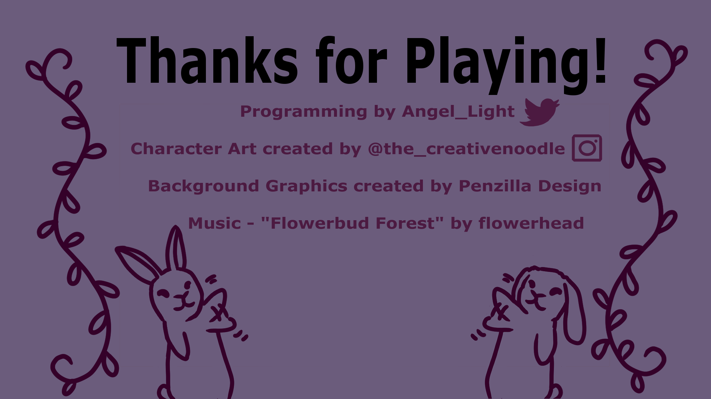

The Push and Pull is a short couch co-op only puzzle platformer about playing as two dualistic bunnies looking for a home
These bunnies have the power to push and pull things around them. The white one (Snowball) can push while the other (Pepper) can pull
You can play on steam
At it's heart it's a game about romance, the natural push and pull that happens in a relationship. It's that concept that I used to develop the whole game. While the game tells a story based in a reality the obstacles in the game are metaphorical for the trials and tribulations that come with a growing romance. One of the ways this was designed into the game is through the way players exit levels. When a player reaches a door, they can choose to move onto the next level alone or with extra effort find a way for both of them to make it to the exit and go together
When I first had this idea I thought it was absolutely genius, it felt so intuitive to me, I had to check it wasn't done already
I only actually started working on it when a local event was being held to practice a pitch and get critiques from vets in the industry. I wanted to pitch something with my girlfriend and I wanted to reuse some code I had made for a couch co-op project that fell through so Push and Pull came up immediately. After the pitch I spent a month working on Wherever you get your podcasts and then spent the next month making a demo and preparing for my first expo showing off the game
At that expo people ended up really liking it, People have so much fun just pushing and pulling each other once they get the power. It's like they instantly start giggling when they start using it, I hadn't expected it to be so fun for people
Now I'm working on the steam release for the game! It's going to be much shorter than what I originally pitched, and I'm excited for it!
